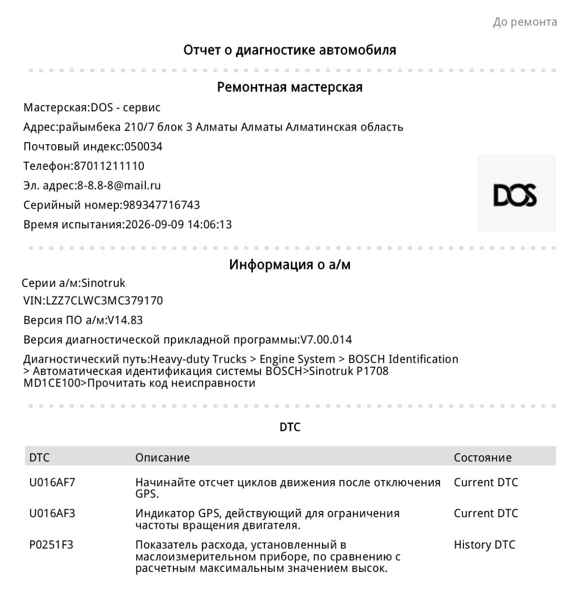

🚛 Sinotruk 2025 — диагностика перед покупкой, проверка VIN, пробега и блокировки GSM/GPS
Выполнена компьютерная диагностика Sinotruk 2025 года с пробегом всего 3 500 км.
VIN автомобиля: LZZ7CLWC3MC379170
Диагностика проводилась перед покупкой автомобиля. Потенциальному владельцу было важно не только проверить электронные системы грузовика, но и убедиться в соответствии VIN-кода и заявленного пробега.
🔍 Компьютерная диагностика перед покупкой

После подключения диагностического оборудования была выполнена проверка электронных блоков управления.
В памяти были обнаружены следующие ошибки:
⚠️ U016AF7
Начат отсчёт циклов движения после отключения GPS.
Статус: Current DTC — текущая ошибка.
⚠️ U016AF3
Активен индикатор GPS, связанный с ограничением частоты вращения двигателя.
Статус: Current DTC — текущая ошибка.
⚠️ P0251F3
Ошибка, связанная с показателем расхода/расчётным максимальным значением.
Особое внимание было уделено первым двум кодам, поскольку они были текущими и относились к системе GSM/GPS и возможному ограничению работы автомобиля.
🔄 Сброс и повторная диагностика
Чтобы отделить старые сохранённые ошибки от реально существующих неисправностей, был выполнен сброс кодов.
После этого проведена повторная компьютерная диагностика.
Ошибки, связанные с GSM/GPS-блокировкой, появились снова и остались активными.
Это важный момент при диагностике автомобиля перед покупкой: если ошибка после удаления появляется повторно, её уже нельзя просто списать на старую запись в памяти блока.
📡 Рекомендация по GSM/GPS-блокировке
Поскольку автомобиль только планировалось приобретать, покупателю была дана рекомендация:
попросить продавца устранить проблему с GSM/GPS-блокировкой до заключения сделки.
В противном случае после покупки новому владельцу придётся самостоятельно заниматься диагностикой и разблокировкой, а это уже дополнительные незапланированные расходы.
Именно поэтому компьютерную диагностику желательно делать до передачи денег, а не после покупки автомобиля.
🔎 Проверка VIN-кода
Параллельно с диагностикой была выполнена проверка идентификационных данных автомобиля.
VIN, считанный при диагностике, был сопоставлен с VIN автомобиля:
LZZ7CLWC3MC379170
✅ VIN-код соответствовал автомобилю.
✅ Расхождений по проверенным данным обнаружено не было.
Такая проверка особенно полезна при покупке грузовой техники — диагностический сканер позволяет дополнительно сопоставить идентификационные данные электронных блоков с маркировкой автомобиля.
📊 Проверка реального пробега
Также был проверен пробег, сохранённый в доступных электронных данных автомобиля.
На щитке приборов было указано примерно 3 500 км.
При диагностике полученные данные по пробегу совпали с показаниями приборной панели — около 3,5 тысячи километров.
Таким образом, в рамках проведённой проверки расхождений между показаниями щитка приборов и доступными диагностическими данными обнаружено не было.
🛠️ Что было выполнено
В рамках диагностики Sinotruk перед покупкой выполнены:
- 💻 полная компьютерная диагностика доступных электронных блоков;
- 🔍 считывание текущих и сохранённых ошибок;
- 🧹 сброс кодов неисправностей;
- 🔄 повторная диагностика;
- 📡 выявление сохраняющихся ошибок GSM/GPS;
- 🪪 проверка VIN-кода;
- 📊 проверка пробега по диагностическим данным;
- 🔢 сравнение пробега с показаниями щитка приборов;
- 📋 рекомендации покупателю перед приобретением автомобиля.
💡 Почему диагностика перед покупкой особенно важна?
Внешне практически новый автомобиль с пробегом 3 500 км может выглядеть полностью исправным. Однако компьютерная диагностика способна показать неисправности и ограничения, которые невозможно определить обычным осмотром.
В данном случае именно диагностика позволила обнаружить активные ошибки GSM/GPS, которые не исчезли после сброса.
Покупатель получил эту информацию до приобретения автомобиля и может потребовать от продавца устранить неисправность либо учитывать возможные расходы при принятии решения о покупке.
✅ Итог выполненной работы
На Sinotruk 2025 года с пробегом 3 500 км была проведена комплексная диагностика перед покупкой.
✔️ Проверены электронные системы.
✔️ Считаны и сброшены ошибки.
✔️ После повторной диагностики ошибки GSM/GPS остались активными.
✔️ Покупателю рекомендовано устранить проблему силами продавца до покупки.
✔️ Проверен VIN-код — данные соответствуют автомобилю.
✔️ Проверен пробег — диагностические данные совпадают с показаниями щитка приборов: около 3 500 км.
🌐 Компьютерная диагностика грузовых Олег
☎️ 8-701-121-11-10 Олег
Читайте также: «DAF 106 перед покупкой — диагностика выявила пробег более 1 млн км» и «Диагностика DAF 2021 перед покупкой».